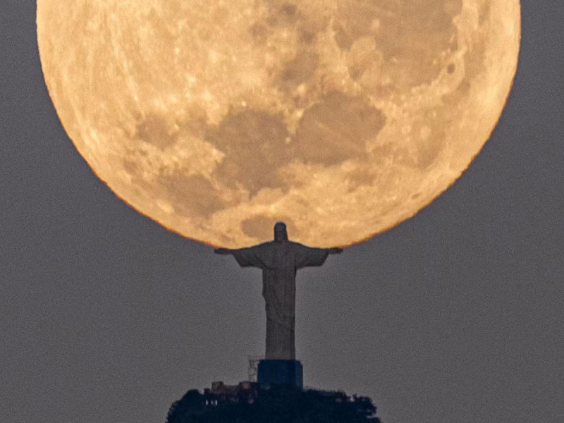

cristo redentor

El Cristo Redentor es una escultura monumental de México que representa a Cristo localizada en Tihuatlán, La ciudad de las esculturas, por tener varias de ellas. Tiene una apariencia similar al Cristo Redentor de Brasil pero mide 1.5 metros más ya que el de Brasil mide 30 metros.